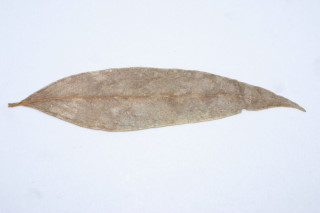
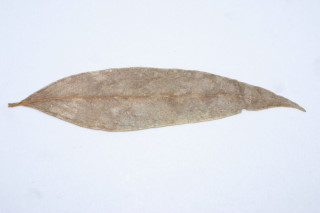

Images :
 


| Habit : | Trees up to 10 m tall. |
| Leaves : | Leaves simple , opposite , decussate ; petiole 0.5-0.8 cm long, rugose , canaliculate , decurrent , slightly sheathing at base; lamina 7.5-14 × 1-3 cm, linear lanceolate , sometimes subfalcate , apex gradually acuminate , base attenuate , chartaceous ; secondary_nerves ca. 10 pairs, tertiary_nerves reticulo-percurrent . |
| Inflorescence / Flower : | Flowers dioecious ; male flowers in axillary , sessile fascicles ; female flower solitary , axillary , sessile . |
| Fruit and Seed : | Berry globose or subglobose , 2 cm across. |